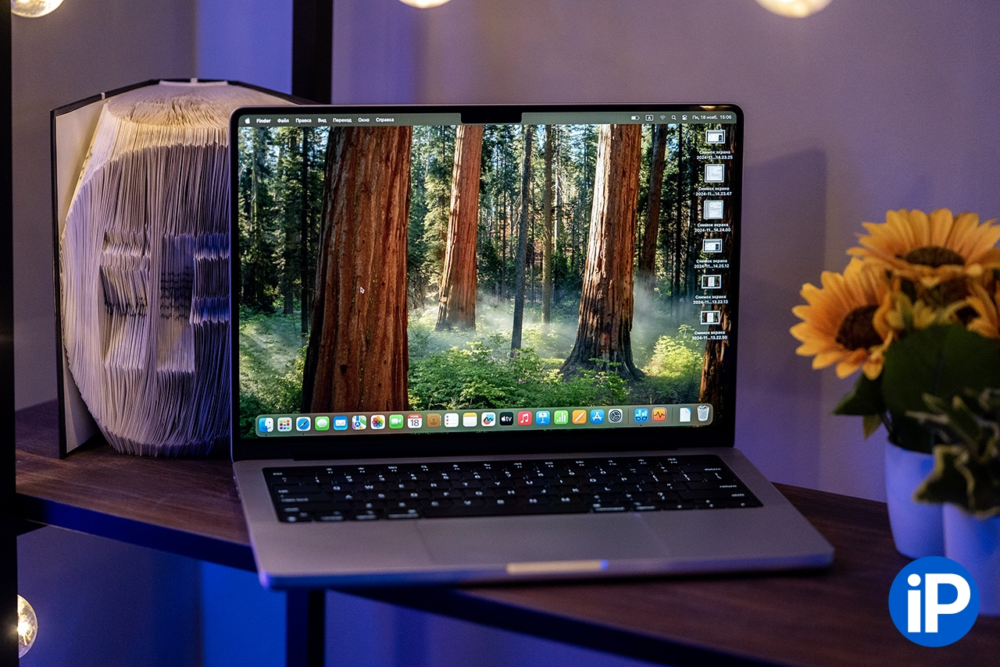
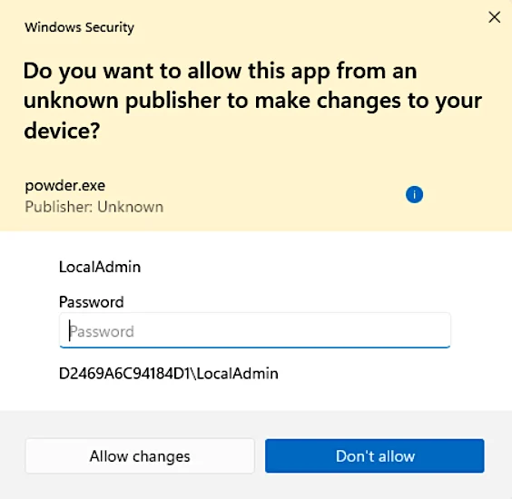
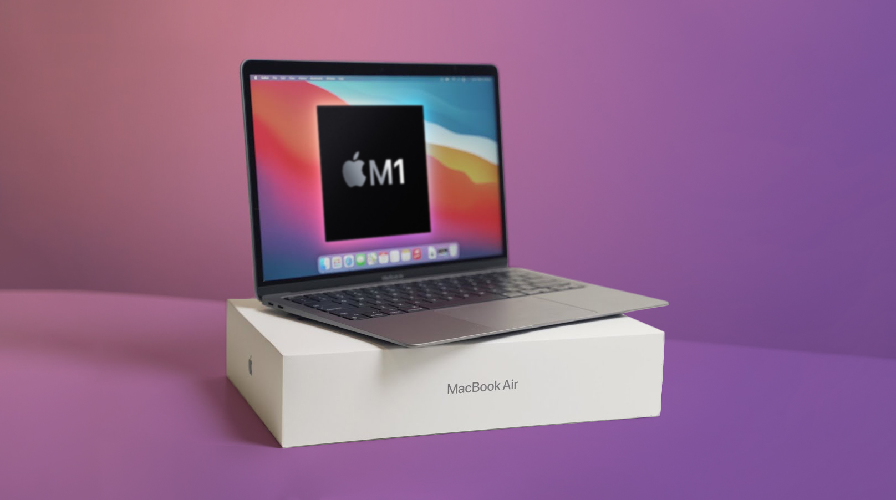

Новый Macbook pro с чипом M4 Pro
“Я пользуюсь MacBook уже более 10 лет. Я видел, как яблочные лэптопы на Intel превращались в «тыкву» с выходом чипа М1, но даже представить себе не мог, что Apple сможет повторить этот трюк уже со своими процессорами.”

Macbook Pro M4Pro
Габариты: Вес 1.4 кг
Толщина корпуса 15,5 мм
Габариты 312,6 х 221,2 мм
В продаже появился новый MacBook PRO с процессором M4 Pro, который мощнее всех своих предшественников.
Microsoft расширила тестирование функции защиты аккаунта администратора — Administrator protection

Microsoft расширила тестирование функции защиты аккаунта администратора под названием Administrator protection. Теперь участники программы Insider могут включать новую функцию безопасности из настроек Windows 11. Опция Administrator protection в Windows 11 помогает минимизировать доступ из аккаунта системного администратора к некоторым определённым событиям в системе. В этом случае нет необходимости всё время работать под учёткой администратора. Новая функция доступна в приложении «Безопасность Windows», но по умолчанию она скрыта. Включение Administrator protection позволяет системе предоставлять временные права администратора при необходимости. Она добавляет уровень аутентификации администратора, связывая его учётку, например, с Windows Hello. Таким образом, пользователю нужно будет ввести свой PIN‑код или пройти предпочтительный режим аутентификации, чтобы предоставить права системного администратора.Согласно описанию Microsoft, новая опция позволит сделать профиль администратора скрытым и недоступным большую часть времени. Когда пользователь запросит действие, требующее прав администратора, то ОС создаст временный маркер администратора только для этой операции. После завершения задачи Windows удаляет временный маркер доступа и блокирует любой дальнейший доступ к профилю администратора. Хотя неограниченный доступ с правами администратора — это здорово, чтобы не нажимать на несколько всплывающих окон, эта функция налагает новый уровень безопасности. Она эффективна для защиты вас от вредоносных программ и других атак, которые используют возможности повышения привилегий в системе. Запросы на аутентификацию через Administrator protection должно быть сложнее обойти, чем функцию безопасности контроля учётных записей пользователей Windows (UAC), чтобы предотвратить компрометацию системы вредоносными программами и злоумышленниками путём доступа к критически важным ресурсам. «При включённой опции Administrator protection запрос на авторизацию пользователя для повышения уровня нёнадежных и неподписанных приложений теперь отображается с дополнительными областями и уведомлениями в описании приложения», — заявила команда Windows Insider.
Samsung выпустила рекламу Galaxy S25 с демонстрацией новых функций Galaxy AI
В прошлом году Samsung анонсировала Galaxy AI — собственный искусственный интеллект, который распространился на флагманские устройства бренда. Он был в эпицентре маркетинговых материалов в течение всего прошлого года, и похоже, что эта тенденция продолжится с запуском серии Galaxy S25 на следующей неделе. В преддверии масштабной презентации Samsung провела голографическую демонстрацию с использованием специальных проекторов, которые были размещены по всему Лондону. Проекции показывали морских жителей, экзотические растения, спортивные события и фонари. Эти проекции должны были продемонстрировать способности Galaxy AI воспроизводить воспоминания из вашей галереи. Ожидается, что в 2025 году Galaxy AI получит ряд новых функций, а смартфоны серии Galaxy S25 станут первыми устройствами с улучшенным ассистентом Bixby, более глубокой интеграцией с Google Gemini и прочими нейросетевыми функциями.
Macbook air M1 Все еще актуален?
MacBook air M1, вышедший почти 5 лет назад. Можно ли им пользоваться в 2025 году?
MacBook Air на M1 — компактный ноутбук 2020 года выпуска.
Некоторые характеристики:
Дисплей: Retina с диагональю 13,3 дюйма, подсветкой LED и технологией IPS, разрешение 2560×1600 пикселей.
Чип: Apple M1, 8-ядерный процессор с 4 ядрами производительности и 4 ядрами эффективности, 7-ядерный графический процессор, 16-ядерная система Neural Engine.
Аккумулятор: встроенный литий-полимерный аккумулятор ёмкостью 49,9 Вт∙ч, до 15 часов работы в интернете по беспроводной сети, до 18 часов при воспроизведении фильмов из приложения Apple TV.
Память: 8 ГБ объединённой памяти, возможная конфигурация — 16 ГБ.
Накопители: SSD-накопитель 256 ГБ, возможная конфигурация — 512 ГБ, 1 ТБ или 2 ТБ.
Клавиатура и трекпад: клавиатура Magic Keyboard с подсветкой, трекпад Force Touch для точного управления курсором и распознавания давления.
Размеры и вес: толщина — 0,41–1,61 см, длина — 30,41 см, ширина — 21,24 см, вес — 1,29 кг.
Смотрите обзор на нашем канале. (у меня нет ни канала, ни мака :(, так что смотрим видео из БигГика)
